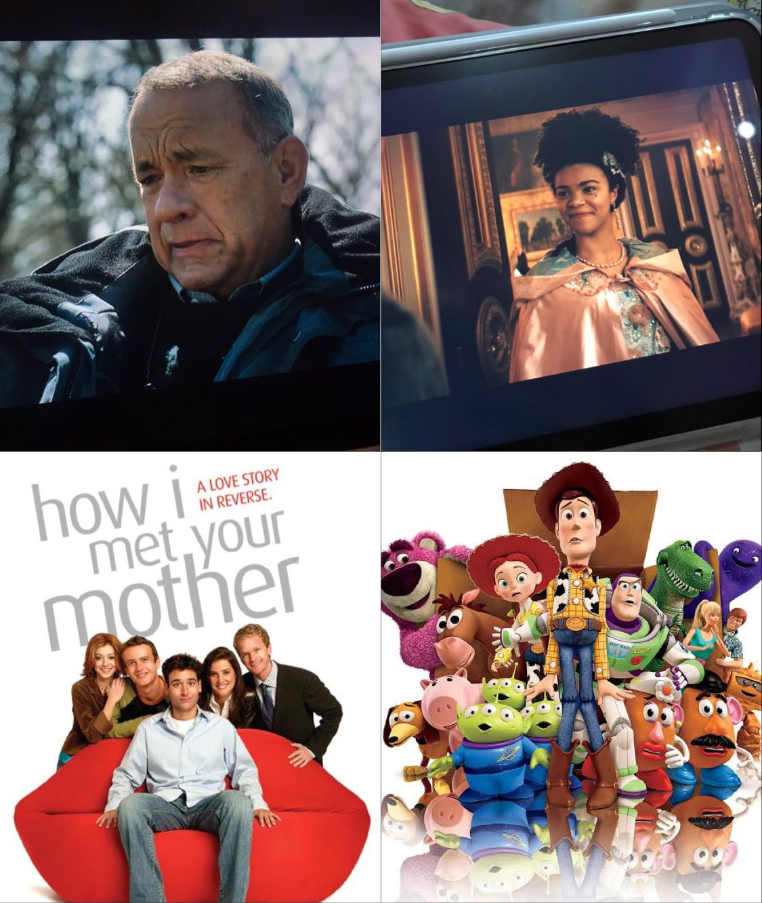

Happy Birthday, Bia!

Haii Biaa! Wah hari ini kepalanya udah nambah 1 yah.
Fun fact, entah kenapa gampang banget inget tanggal lahir lo soalnya 4 Agustus tuh pas banget hari setelah ultah bokap gue. Terus waktu itu gue kayak mikir, hmm Bia ultah enaknya dikasih apa ya
 , trus tiba-tiba kepikiran bikin birthday web ala-ala yang ga seberapa ini HAHAHAHA.
, trus tiba-tiba kepikiran bikin birthday web ala-ala yang ga seberapa ini HAHAHAHA.
So, Happy Birthday, Bia! Semoga panjang umur dan sehat selalu, semoga hari-harinya selalu dipenuhi keseruan dan huru-hara (huru-haranya yang baik ya guys), semoga selalu makan dengan endulita , semoga kalo beli kopi karena emang pengen ya (bukan karena butuh biar ga ketiduran), semoga ga struggle lagi dengan habit mandi malemnya itu. Kok semoga terus yah... WKWKWKWK pokonya wish you all the best Bia!
Semangat terus kuliah, publi, iise, dan sosmasnya!!
Did You Know? (Bia's Fun Fact Edition)
1. Coffee as an Energy DrinkTiada hari tanpa kopi ya guys, apalagi kalo musim rapat. Fun fact, kata Bia dia mulai minum kopi dari SMP gara-gara beli es Good Day di kantin SD. Another fun fact, belakangan ini dia kok jadi suka beli Americano ya guys. |
|
|  |
2. Likes to Watch Movies or SeriesWah kalo ini banyak ya guys mulai dari sitcom kayak HIMYM, kartun kayak Toy Story, sampe series kayak Bridgerton. Another fun fact, belakangan ini sering nonton filmnya Tom Hanks. |
3. Music TasteNah ini juga banyak sih, tapi dia kayaknya fans nomor 1 Taylor Swift ya guys (bikin notes lagu August di bulan Agustus is a must!). |
|
4. Food TasteHOKBEN. |